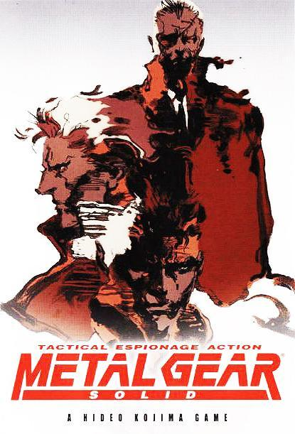
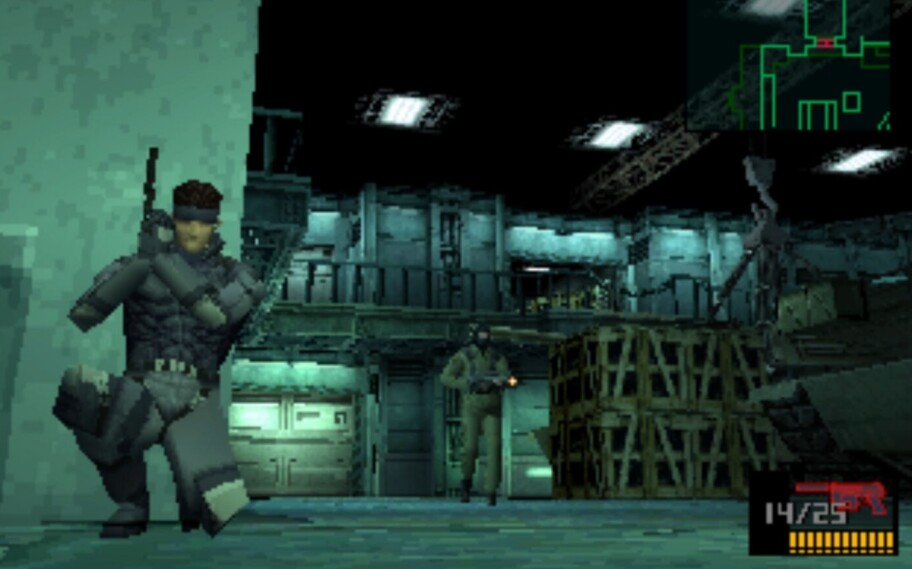
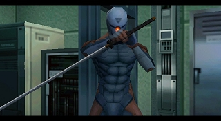
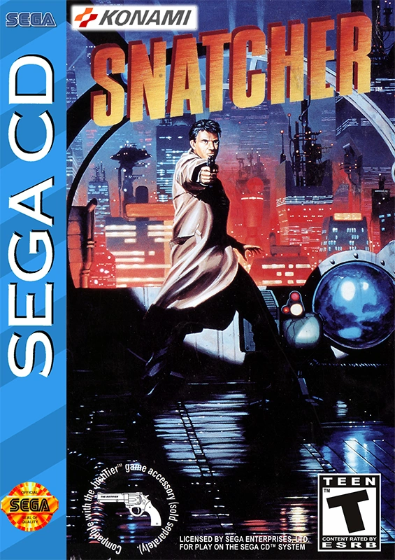
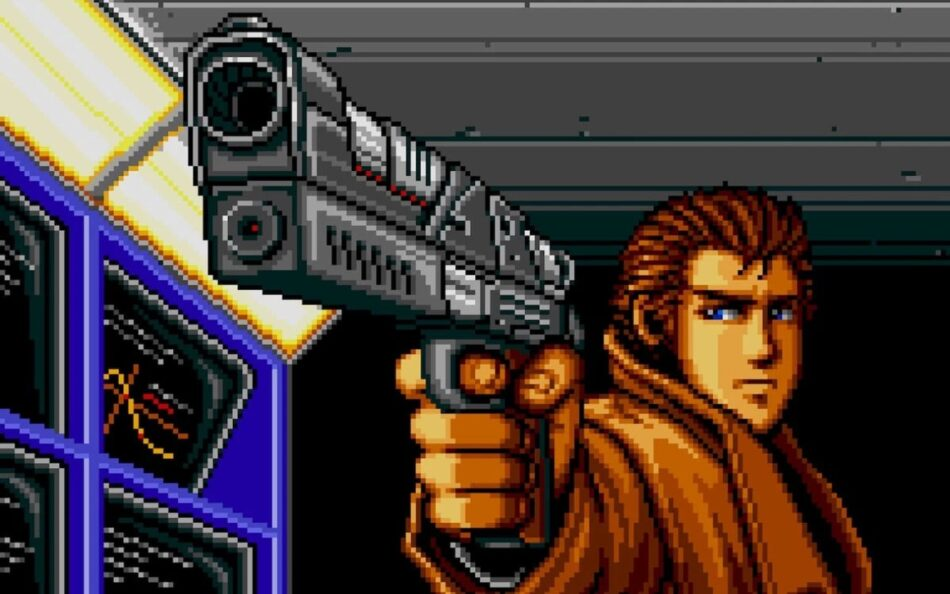
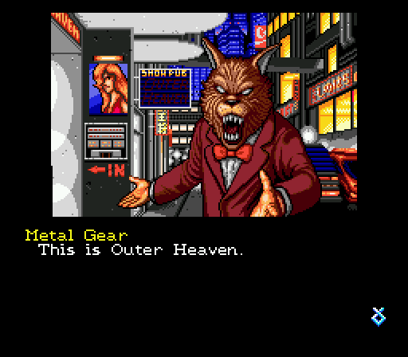
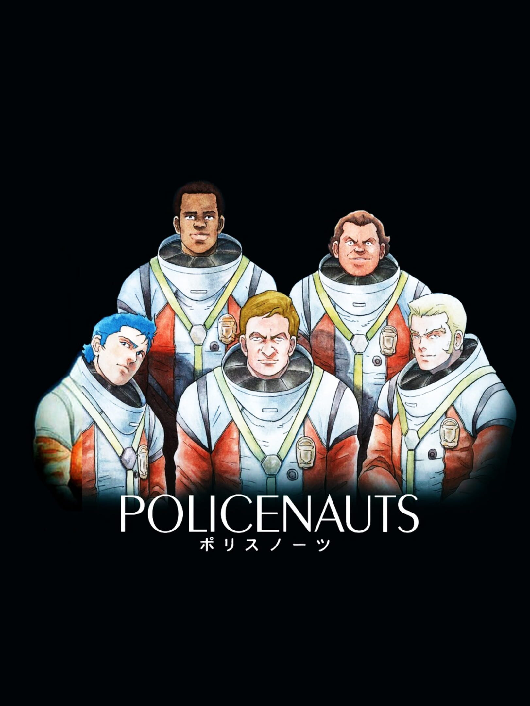
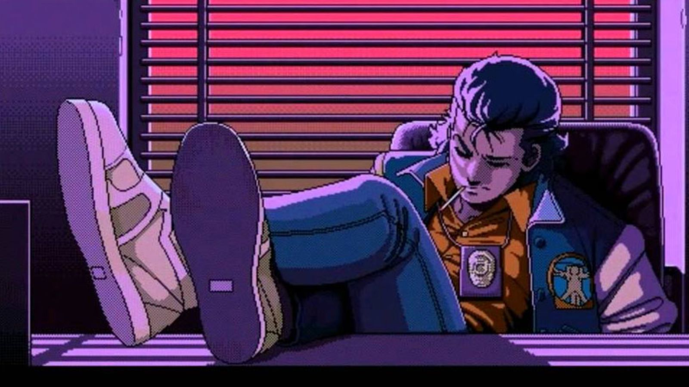
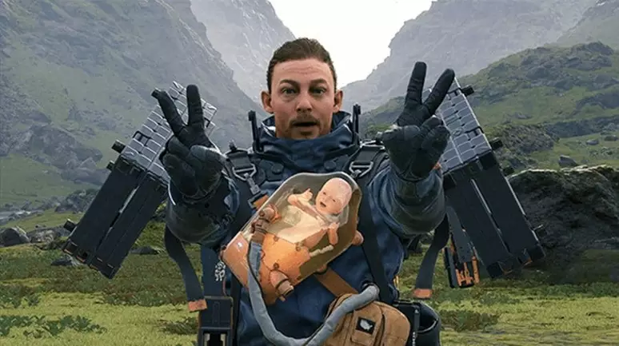
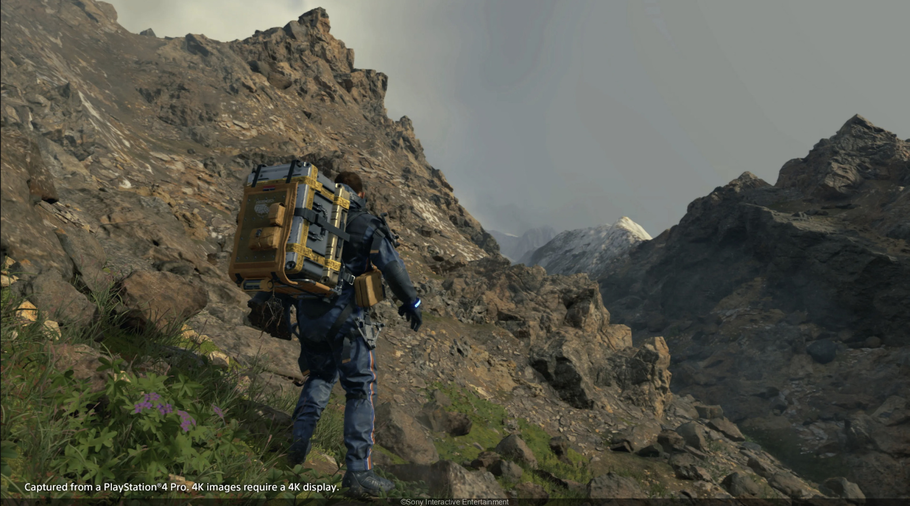

Hideo Kojima is a renowned Japanese video game designer, director, and writer, best known for pioneering the stealth game genre with his critically acclaimed Metal Gear series. With a career spanning over three decades, Kojima has consistently pushed the boundaries of interactive storytelling, blending cinematic elements with innovative gameplay mechanics. His unique vision and dedication to the craft have earned him a place among the most influential figures in the video game industry.
Hideo Kojima took over the development of the game Metal Gear from a senior associate, shifting its focus from combat to stealth due to hardware limitations, inspired by the film The Great Escape. Released on July 13, 1987, for the MSX2 in Japan and later in Europe, the game features the character Solid Snake, who must stop a nuclear-armed tank in Outer Heaven. Metal Gear is one of the earliest stealth games. An NES port with altered graphics and an incomplete ending was released the same year. Kojima criticized the changes, including poor translation and missing content, which a programmer attributed to a tight three-month deadline and hardware constraints.
In Metal Gear Solid, players control Solid Snake, a retired FOXHOUND soldier on a mission to infiltrate the Shadow Moses nuclear weapons facility, which has been seized by rogue FOXHOUND terrorists threatening a nuclear attack. Snake must rescue hostages, uncover the terrorists' true capabilities, and neutralize the nuclear threat. He discovers the terrorists possess Metal Gear REX, a nuclear-capable bipedal tank, and faces enemies including Revolver Ocelot, Psycho Mantis, Sniper Wolf, Vulcan Raven, and his brother, Liquid Snake. Snake uncovers dark secrets about his past and genetic manipulation, and learns about "The Patriots," a secret organization controlling events. The game concludes with a showdown against Liquid Snake and hints at ongoing battles against powerful forces.
 Hideo Kojima's next project, the graphic adventure game Snatcher, was released on November 26, 1988, for the NEC PC-8801 and MSX2 in Japan. Kojima wrote and directed the game, initially planning for six chapters but reducing it to two due to development constraints, leaving the story on a cliffhanger. Influenced by cyberpunk and Blade Runner, Snatcher featured a semi-open world design and a cinematic approach, guided by character designer Tomiharu Kinoshita and artist Satoshi Yoshioka. Despite its innovative storytelling, praised by critics like Adrian Chen of The New York Times, the Sega CD port faced expensive and lengthy localization. Snatcher was modestly successful in Japan but failed commercially in the west, later gaining a cult following.
Gillian Seed, a man with no memory of his past, joins JUNKER to confront the Snatchers, android assassins that replace humans. With the help of his robotic partner, Metal Gear Mk.II, Gillian investigates a series of murders and uncovers hidden secrets about the Snatchers and his own past. The plot blends investigation, mystery, and action, culminating in surprising revelations about the truth behind the Snatchers and Gillian's identity.
 During a break from developing Snatcher due to memory limitations, Hideo Kojima began conceptualizing Policenauts. Frustrated with game development, he wanted more creative control and developed a scripting engine post-Metal Gear 2: Solid Snake (1990) to manage animations and music. Policenauts, initially called Beyond, began development in 1990 and took four years to complete. Released on July 29, 1994, for the PC-9821 in Japan, the game received high praise for its presentation, animation quality, voice acting, and immersive setting. Retrospective reviews have generally been positive, highlighting Policenauts as a stylized, film-influenced work within Kojima's portfolio.
The story follows Jonathan Ingram, a policenaut who returns to Earth after being lost in space for 25 years. He joins the narcotics investigation agency to solve a drug trafficking case in the space colony Beyond Coast. During the investigation, Jonathan faces ethical dilemmas, reunites with his former partner, and uncovers hidden secrets about the colony and his own past. The plot blends investigation, action, and space exploration, exploring themes such as medical ethics and human identity.
On December 16, 2015, Hideo Kojima announced the re-establishment of Kojima Productions as an independent studio, partnered with Sony Computer Entertainment. His first game, Death Stranding, exclusive to PlayStation 4, was revealed at E3 2016 with a trailer featuring Norman Reedus. Kojima also launched a YouTube channel in 2016, where he and film critic Kenji Yano discuss films and studio matters. Starting in 2017, Kojima contributed regularly to Rolling Stone, discussing films and drawing comparisons to his own work. In February 2017, he shared his views on the Nintendo Switch, likening its functionality to his 'transfarring' technology. Death Stranding, released on November 8, 2019, received positive reviews, was a commercial success, and won several awards, including "Best Game Direction" and "Best Score/Music" at The Game Awards 2019, and "Outstanding Achievement in Audio Design" and "Outstanding Technical Achievement" at the 23rd Annual D.I.C.E. Awards.
Death Stranding is set in a dystopian future where catastrophic events have fragmented society. Players control Sam Porter Bridges, a deliveryman who traverses desolate landscapes to reconnect isolated communities. Facing supernatural threats and environmental dangers, Sam also deals with a mysterious organization. The story explores themes of human connection, isolation, and the impacts of advanced technology in a post-apocalyptic world.
 